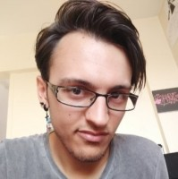

<div class="content-about">
    <div class="about">
        <div class="image">
            
        </div>
        <div class="text">
            Ma passion pour le développement commence en 2012 lors de ma dernière année au lycée. Une nouvelle spécialité a fait son apparition : Informatique et Science du Numérique, une matière qui s’accentuait sur le développement informatique. Pour le projet noté au Bac, j’ai décidé de faire un site web et c’est à ce moment que j’ai su que je voulais faire ce métier.<br/>
            <br/>
            En 2013, avec un Bac S en poche, je commence mes études supérieures à Epitech Paris. Cette école demande énormément d’investissement personnel et de motivation pour pouvoir obtenir le diplôme.<br/>
            Durant les 2 premières années j’ai appris les bases de la programmation en C et en C++ et j’ai fait un stage (en première année) qui m’a fait prendre conscience des progrès énorme que j’ai pu faire.<br/>
            <br/>
            Les 3 années suivantes sont les années de consolidation où, en groupe de 5 minimum, nous devons montrer tout ce qu’on a appris dans un projet de fin d’étude à réalisé pendant 2 ans.<br/>
            Nous avons choisi de faire un jeu vidéo en réalité virtuelle développé grâce à Unity. J’ai fait aussi plusieurs stages, surtout en développement web, qui m’ont appris comment travailler en équipe.<br/>
            <br/>
            Actuellement, je suis Architecte au sein du Ministère des Armées. Cette expérience me permis de m’éloigner du développement et de comprendre comment répondre à un besoin métier avec une solution informatique.<br/>
            Je peux voir comment différentes équipes travaillent ensemble et l’importance de l’architecture dans l’un des plus grands parcs informatiques en Europe pour concrétiser un projet.
        </div>
    </div>
 </div>